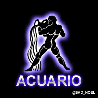
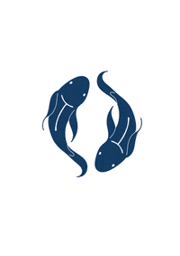
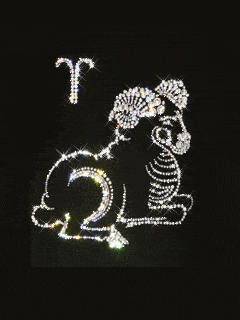
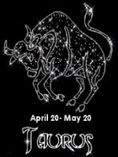
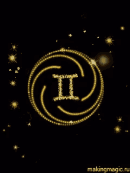
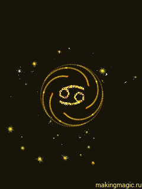
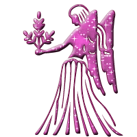
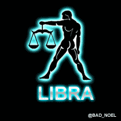
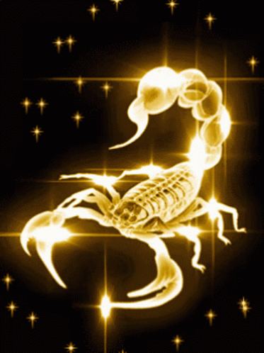
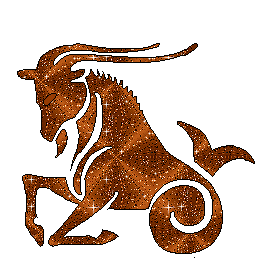

| Signo | Del | Amor | Dinero | Trabajo | Numero | Salud |
|---|---|---|---|---|---|---|
|  | Enero 20 - Febrero 18 | Los Acuario son conocidos por su independencia y originalidad en el amor. | Suelen tener una mentalidad innovadora en cuanto a la gestión de sus finanzas. | Son personas creativas y visionarias en el entorno laboral. | 7 | Su vitalidad puede estar vinculada a la necesidad de libertad y espacio. |
|  | Febrero 19 - Marzo 20 | Los Piscis son románticos y sensibles, valoran la conexión emocional en el amor. | Su intuición les guía en la gestión de sus finanzas, aunque pueden ser soñadores. | Tienen una naturaleza compasiva y adaptable en el trabajo. | 4 | Su bienestar emocional está estrechamente ligado a su creatividad. |
|  | Marzo 21 - Abril 19 | Los Aries son apasionados y directos en el amor, les gusta liderar. | Suelen ser audaces en sus decisiones financieras, buscando el éxito. | Son personas enérgicas y emprendedoras, siempre buscando nuevos desafíos. | 9 | Su salud puede verse beneficiada por su actitud proactiva ante la vida. |
|  | Abril 20 - Mayo 20 | Los Tauro valoran la estabilidad y la lealtad en el amor, son pacientes. | Son personas prudentes en la gestión de sus finanzas, buscando seguridad. | Tienen una naturaleza perseverante y determinada en el trabajo. | 2 | Su bienestar físico está relacionado con su capacidad para relajarse. |
|  | Mayo 21 - Junio 20 | Los Géminis son comunicativos y curiosos en el amor, siempre buscan variedad. | Tienden a ser versátiles en la gestión de sus finanzas, adaptándose a cambios. | Son personas inteligentes y adaptables en el entorno laboral. | 5 | Su salud puede beneficiarse de actividades que estimulen su mente. |
|  | Junio 21 - Julio 22 | Los Cáncer son protectores y cariñosos en el amor, valoran la seguridad emocional. | Suelen ser cautelosos en la gestión de sus finanzas, buscando protección. | Tienen una naturaleza intuitiva y emocional en el trabajo. | 6 | Su bienestar emocional está vinculado a la calidad de sus relaciones. |
| Julio 23 - Agosto 22 | Los Leo son generosos y carismáticos en el amor, les gusta ser el centro de atención. | Suelen ser generosos pero también pueden ser derrochadores en sus finanzas. | Tienen una naturaleza ambiciosa y creativa en el trabajo. | 1 | Su salud puede beneficiarse de actividades que les hagan sentirse especiales. | |
|  | Agosto 23 - Septiembre 22 | Los Virgo son prácticos y detallistas en el amor, valoran la honestidad. | Suelen ser organizados y ahorrativos en la gestión de sus finanzas. | Tienen una naturaleza analítica y perfeccionista en el trabajo. | 3 | Su bienestar está vinculado a su capacidad para mantenerse organizados. |
|  | Septiembre 23 - Octubre 22 | Los Libra buscan la armonía y el equilibrio en el amor, valoran la justicia. | Suelen ser diplomáticos en la gestión de sus finanzas, buscando equidad. | Tienen una naturaleza cooperativa y sociable en el trabajo. | 8 | Su bienestar emocional está vinculado a la calidad de sus relaciones interpersonales. |
|  | Octubre 23 - Noviembre 21 | Los Escorpio son apasionados y leales en el amor, valoran la profundidad emocional. | Suelen ser estratégicos y decididos en la gestión de sus finanzas. | Tienen una naturaleza determinada y misteriosa en el trabajo. | 5 | Su bienestar emocional está vinculado a la autenticidad y la conexión con su intuición. |
| Noviembre 22 - Diciembre 21 | Los Sagitario son aventureros y optimistas en el amor, buscan la libertad. | Suelen ser generosos y optimistas en la gestión de sus finanzas. | Tienen una naturaleza entusiasta y aventurera en el trabajo. | 3 | Su bienestar está vinculado a su capacidad para explorar y expandir sus horizontes. | |
|  | Diciembre 22 - Enero 19 | Los Capricornio son responsables y disciplinados en el amor, valoran la estabilidad. | Suelen ser pragmáticos y ambiciosos en la gestión de sus finanzas. | Tienen una naturaleza trabajadora y ambiciosa en el trabajo. | 8 | Su bienestar está vinculado a su capacidad para establecer metas realistas y alcanzarlas. |